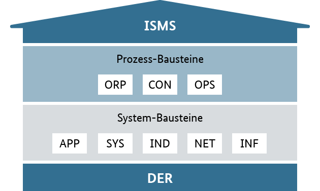

IT-Sicherheit
- Grundlagen der Informationssicherheit anwenden
- IT-Grundschutz planen
- DSGVO-konform handeln
- Abwehr von Angriffen planen
- Verfügbarkeit sicherstellen
- Integrität gewährleisten
- Vertraulichkeit herstellen
Grundlagen der Informationssicherheit anwenden
Arbeitsauftrag - Dimensionen der Informationssicherheit unterscheiden
Aufgabe 1
Beschreiben Sie das Schutzziel "Vertraulichkeit" in eigenen Worten und geben Sie ein Beispiel.
Aufgabe 2
Beschreiben Sie das Schutzziel "Integrität" in eigenen Worten und geben Sie ein Beispiel.
Aufgabe 3
Beschreiben Sie das Schutzziel "Verfügbarkeit" in eigenen Worten und geben Sie ein Beispiel.
Aufgabe 4
Der Außendienst einer großen Handelskette hat als Endgerät ein Convertable-Laptop aus der Business-Serie eines weit verbreiteten Herstellers erhalten. Dieses wird bei allen Dienstreisen mit dem dem Auto oder auch mit der Bahn mitgeführt.
Beschreiben Sie anhand des Beispiels jeweils zwei notwendige Aktionen seitens der IT-Abteilung der Handelskette aus der Perspektive der Administration, um die drei Schutzziele der Informationssicherheit einzuhalten.
Arbeitsauftrag - Angriffsszenarien einordnen
Aufgabe 1
Beschreiben Sie jeweils die Bedrohung durch ...
- Viren
- Würmer
- Trojaner
- Ransomware
- Phishing
- Spoofing
- Spam
- Spyware
- Adware
- DDoS-Attacken
- APT-Attacken
Aufgabe 2
Ransomware hat sich in den letzten Jahren als große Herausforderung für die IT-Abteilungen aller Branchen herausgestellt. Beschreiben Sie den üblichen Ablauf einer Ransomware-Attacke auf ein Unternehmen.
Aufgabe 3
Welche Handlungen sind bei einer Betroffenheit durch eine Ransomware-Attacke zu ergreifen? Machen Sie deutlich, wenn es sich bei den Handlungen um rechtlich vorgeschriebene Schritte handelt.
Aufgabe 4
Welche Handlungen sind in einer IT-Abteilung angebracht, um auf eine Ransomware-Attacke vorbereitet zu sein und diese möglichst abzumildern?
Aufgabe 5
Beschreiben Sie den Ablauf einer DDoS-Attacke und zeigen Sie Handlungsoptionen auf, wie diesem Angriff begegnet werden kann.
Arbeitsauftrag - Grundlagen der Computersicherheit einhalten
Aufgabe 1
Nennen Sie Merkmale eines sicheren Passwortes.
Aufgabe 2
Beschreiben Sie, was unter 2-Faktor-Authentifizierung zu verstehen ist. Machen Sie dabei im Detail deutlich, was die zwei Faktoren sind.
Aufgabe 3
Beschreiben Sie den technischen Ablauf zur Einrichtung und Nutzung einer 2FA mithilfe von TOTP.
Aufgabe 4
Welche Vor- und welche Nachteile hat die Verwendung von biometrischem zweiten Faktor im Rahmen der 2FA?
Arbeitsauftrag - Technisch-organisatorische Maßnahmen anwenden
Aufgabe 1
Was ist unter technisch-organisatorischen Maßnahmen im Allgemeinen zu verstehen?
Aufgabe 2
Sie arbeiten in einem Unternehmen, welches einen eigenen Serverraum für On-Premise Dienste betreibt. Beschreiben Sie an diesem Beispiel, welche technisch-organisatorischen Maßnahmen ergriffen werden können, um eine sichere Umgebung zum Betrieb des Servers zu gewährleisten.
Aufgabe 3
Welche technisch-organisatorischen Maßnahmen können direkt an einem Server vorgenommen werden, um die Informationssicherheit zu erhöhen?
IT-Grundschutz planen
Arbeitsauftrag - IT-Grundschutz planen
Aufgabe 1
Welche Norm betrifft die Gewährleistung der IT-Sicherheit und den Aufbau eines IT-Sicherheitsmanagementsystems? Beschreiben Sie kurz den Inhalt der Norm(-enfamilie).
Aufgabe 2
Im Sinne der kontinuierlichen Verbesserung wird der PDCA-Zyklus auf ein IT-Sicherheitssystem angewendet. Beschreiben Sie die einzelnen Schritte anhand eines Beispielfalls.
Aufgabe 3
Die Bausteine des IT-Grundschutzes sind gemäß BSI in das folgende Schichtenmodell gegliedert:
 Bildquelle: https://www.bsi.bund.de/SharedDocs/Bilder/DE/BSI/Themen/grundschutzdeutsch/Webkurs2018/Abb_5_02_Schichtenmodell.png?__blob=normal&v=1
Beschreiben Sie kurz, was hinter den Bausteinen steht.
Aufgabe 4
Im Rahmen eines Projektes beschaffen Sie ein NAS, um einen zentralen Datenspeicher für die Vertriebsabteilung einzurichten. Auf diesem Datenspeicher werden sowohl Produktbezogene Dateien wie Anleitungen und Produktdatenblätter, als auch die Anfragen von Interessenten, Geschäftsbriefe mit Kunden und Informationen der Außendienstmitarbeiter zu Kundenbesuchen gespeichert werden.
Sie möchten hierzu eine Schutzbedarfs- und Risikoanalyse durchführen und sich im IT-Grundschutz-Kompendium informieren. Welches Vorgehen ist dafür notwendig.
Aufgabe 5
Nach BSI-Standard werden die Schutzbedarfskategorien "niedrig", "normal", "hoch" und "sehr hoch" unterschieden. Beschreiben Sie diese Stufen und geben Sie jeweils ein Beispiel.
DSGVO-konform handeln
Arbeitsauftrag - DSGVO-konform handeln
Aufgabe 1
Definieren Sie, was personenbezogene Daten sind.
Aufgabe 2
Worin unterscheiden sich personenbezogene Daten und besonders schützenswerte personenbezogene Daten?
Aufgabe 3
Ein Mitarbeiter eines Personaldienstleisters tätigt im Rahmen eines Vortrags auf einer Jobmesse folgende Aussage: "Wir können das durchschnittliche Gehalt unserer Mitarbeitergruppe der IT-System-Kaufleute an dieser Stelle aus datenschutzgründen nicht nennen."
Nehmen Sie Stellung zu der Aussage.
Aufgabe 4
Als Kunde eines Onlineshops werden Daten gespeichert. Nennen Sie die Rechte der Betroffenen.
Aufgabe 5
Im Falle eines DSGVO-Verstoßes oder auch im Falle eines Cyberangriffs mit Erbeutung von Kundendaten ergeben sich für das hiervon betroffene Unternehmen Verpflichtungen. Welche sind dies?
Aufgabe 6
Unterscheiden Sie identifizierbare Daten, pseudonomysierte Daten sowie anonyme Daten von Personen.
Abwehr von Angriffen planen
Arbeitsauftrag - Abwehr von Angriffen planen
Aufgabe 1
Beschreiben Sie die Funktionsweise eines Antiviren-Programms auf einem Client.
Aufgabe 2
Beschreiben Sie die Funktionsweise einer portbasierten Firewall.
Aufgabe 3
Beschreiben Sie die Funktionsweise einer Firewall mit Deep-Packet-Inspection.
Aufgabe 4
Beschreiben Sie kritische Aspekte bei der Nutzung von Deep-Packet-Inspection.
Aufgabe 5
Die schnelle Reaktion auf einen Cyberangriff ist wichtig, doch dazu muss dieser erst mal auffallen. Beschreiben Sie Möglichkeiten, ein Netzwerk-Monitoring durchzuführen.
Aufgabe 6
Welche Rolle spielen VLANs in einer Sicherheitsstrategie für das eigene Netzwerk?
Aufgabe 7
Wie ist eine DMZ in einem Unternehmensnetzwerk aufgebaut? Unterscheiden Sie mit Blick auf die Informationssicherheit die verschiedenen Netzbereiche.
Verfügbarkeit sicherstellen
Arbeitsauftrag - Unterbrechungsfreie Stromversorgung planen
Aufgabe 1
Unterscheiden Sie die Konzepte "Notstrom" und "unterbrechungsfreie Stromversorgung". Welche Ziele haben diese jeweils und wie werden sie technisch realisiert?
Aufgabe 2
Beschreiben Sie die Funktionsweise einer Online-USV.
Aufgabe 3
Beschreiben Sie die Funktionsweise einer Line-Interactive-USV.
Aufgabe 4
Beschreiben Sie die Funktionsweise einer Offline-USV.
Aufgabe 5
Ein Startup betreibt einen Serverrack mit dem Ziel Online-Dienste anzubieten und ein Speichersystem zu nutzen. Das Rack hat eine Leistungsaufnahme von 2,5 kW. Damit ein plötzlicher Stromausfall nicht zu technischen Problemen führt, wird das Rack über eine USV mit einer Nennleistung von 12 kVA abgesichert. Die Batterie in der USV hat eine Kapazität von 5 kWh.
- Berechnen Sie die Autonomiezeit der USV in ganzen Minuten unter der Bedingung, dass diese bei Stromausfall zu 95% geladen ist.
- Durch gezieltes Herunterfahren von wenig genutzten Speichern wird die Leistungsaufnahme des Racks um 1 kW gesenkt. Welchen Effekt hat dies auf die Autonomiezeit in ganzen Minuten?
- Die Verfügbarkeit des Stromnetzes ist von hoher Wichtigkeit. Am Standort des Servers hat es im vergangenen Kalenderjahr 3 Stromausfälle gegeben. Ein Bagger hatte im Februar eine Leitung in der Straße unterbrochen, sodass der Strom für eine Stunde ausgefallen war. Im Oktober führte ein Sturm zu einer Unterbrechung von zwei Stunden, weil ein Baum in die Stromtrasse gefallen war. Im November fiel der Strom aufgrund von Handwerkertätigkeiten am Sicherungskasten des Bürokomplexes planmäßig für weitere zwei Stunden aus. Berechnen Sie die Verfügbarkeit des Stroms für das Startup.
Arbeitsauftrag - Backupverfahren anwenden
Aufgabe 1
Unterscheiden Sie die Begriffe "Differenzielles Backup" und "Inkrementelles Backup".
Aufgabe 2
Was ist unter unveränderlichen Backups zu verstehen und wofür werden diese genutzt?
Aufgabe 3
Für Backups besteht die 3-2-1-Regel. Welche Handlungsempfehlungen lassen sich hieraus ableiten?
Aufgabe 4
Für systematische Backups mit mehreren Medien wird das Großvater-Vater-Sohn-Prinzip vorgeschlagen. Welche Handlungen sind hiermit verbunden?
Aufgabe 5
Backups sollten verschlüsselt werden und es muss eine Zugriffskontrolle für Backup-Dateien bestehen. Außerdem müssen Backup-Verfahren getestet werden. Beschreiben Sie notwendige Vorgehensweisen hierfür.
Aufgabe 6
Welche Datenschutzbestimmungen sind bei Cloud-Backups einzuhalten?
Aufgabe 7
Welche Aspekte sind im Rahmen einer Notfallwiederherstellung zu berücksichtigen? Nehmen Sie auch Bezug zu RTO und RPO.
Integrität gewährleisten
Arbeitsauftrag - Integrität von Daten kontrollieren
Aufgabe 1
Beschreiben Sie, was eine Hash-Funktion ist und wie diese zur Prüfung der Integrität von Daten herangezogen werden kann.
Aufgabe 2
Beschreiben Sie, was eine Checksum ist und wie diese zur Prüfung der Integrität von Daten herangezogen werden kann.
Aufgabe 3
Beschreiben Sie, was eine Digitale Signatur ist und wie diese zur Prüfung der Integrität von Daten herangezogen werden kann.
Vertraulichkeit herstellen
Arbeitsauftrag - Verschlüsselung von Daten durchführen
Aufgabe 1
Beschreiben Sie den Ablauf bei Übertragung einer Mitteilung, die symmetrisch verschlüsselt wurde.
Aufgabe 2
Beschreiben Sie den Ablauf bei Übertragung einer Mitteilung, die asymmetrisch verschlüsselt wurde.
Aufgabe 3
Was ist unter einer Ende-zu-Ende-Verschlüsselung zu verstehen?
Aufgabe 4
Was ist eine Public Key Infrastructure?
Aufgabe 5
Inwiefern stehen Verschlüsselung und VPN miteinander in Beziehung?
Aufgabe 6
Was ist ein Zero-Knowledge-Proof?
Arbeitsauftrag - Benutzer und Rollen systematisch planen
Aufgabe 1
Für die Verwaltung von Usern, Gruppen und Rollen werden sogenannte Verzeichnisdienste genutzt. Beschreiben Sie diese in eigenen Worten.
Aufgabe 2
Welche Unterschiede bestehen zwischen einem zentralisierten und einem dezentralisierten Verzeichnisdienst? Welche Vor- und Nachteile haben beide Ansätze?
Aufgabe 3
Welche Sicherheitsaspekte sind bei der Implementierung und Verwaltung von Verzeichnisdiensten zu beachten? Wie können Unternehmen ihre Verzeichnisdienste vor unberechtigtem Zugriff schützen?
Aufgabe 4
Wie hängen die User, Gruppen und Rollen in einem Verzeichnisdienst wie dem Active Directory zusammen?
Lizenz

Der KIT PV AP1 Kurs von André Neumann ist lizenziert unter einer Creative Commons Namensnennung - Nicht-kommerziell - Weitergabe unter gleichen Bedingungen 4.0 International Lizenz. Fragen, Hinweise etc. an neumann@mmbbs.de.